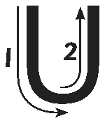
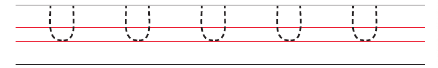
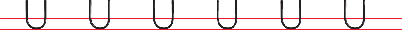
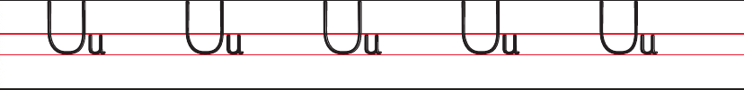

Letter U
Trace the letter U.

A picture of the stroke-direction diagram for uppercase U. Follow the numbered arrows. Draw down the left side, curve around the bottom, then rise straight up the right side.

Clear drawing
Copy the following:

Clear drawing

Clear drawing